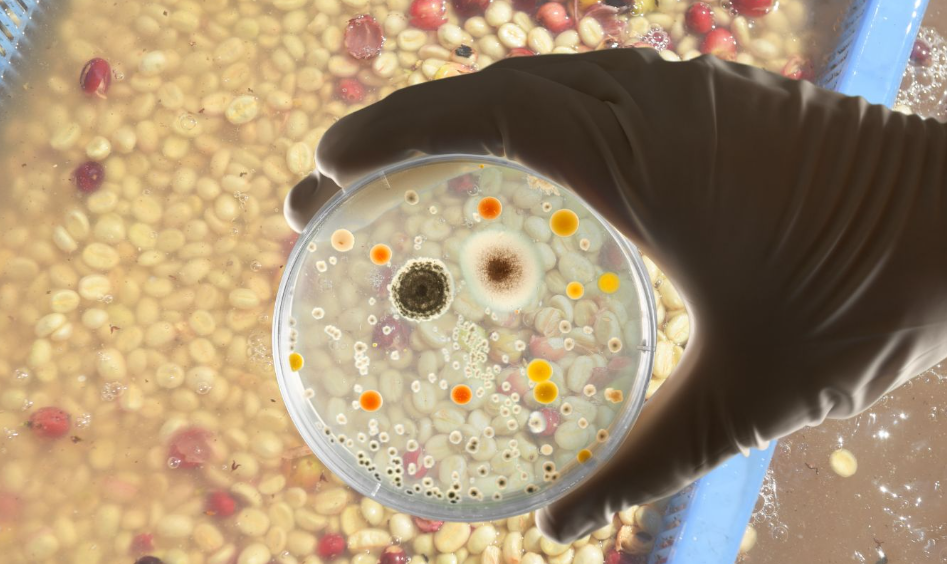

En un coup d'œil :
Process où on inocule des souches de levures spécifiques pour créer des profils aromatiques ciblés. Résultat : reproductibilité maximale, profils sur-mesure (floral, fruité tropical, fruits jaunes), clarté aromatique exceptionnelle. C'est le café "design", où on choisit les arômes comme un parfumeur choisit ses notes.
Comprendre : La précision microbiologique
Le principe de l'inoculation
Dans une fermentation spontanée :
•50–100+ souches de levures différentes cohabitent
•Compétition aléatoire → résultat variable
•Impossible de prédire le profil exact
Avec inoculation de souches pures :
•1–3 souches sélectionnées scientifiquement
•Domination assurée (densité 10⁶–10⁷ cellules/mL)
•Profil aromatique reproductible à 95%+
C'est exactement le principe de la brasserie moderne (bière) et de l'œnologie de précision.
Les deux grandes familles de levures
Saccharomyces (levures fermentaires "classiques")
| Espèce | Origine | Profil aromatique | Usage traditionnel |
|---|---|---|---|
| S. cerevisiae | Levure de boulangerie/bière | Fruité équilibré, esters classiques | Vin, bière, pain |
| S. bayanus | Levure de champagne | Sec, minéral, peu d'esters | Vins effervescents |
| S. pastorianus | Levure de lager | Propre, neutre, fruits légers | Bières lager |
Caractéristiques communes :
•✅ Fermentation puissante, rapide
•✅ Production d'éthanol élevée (6–12%)
•✅ Tolèrent pH bas (3,5–4,5)
•✅ Esters fruités classiques (isoamyl-acétate, éthyl-butanoate)
Non-Saccharomyces (levures "aromatiques")
| Espèce | Origine | Profil aromatique | Particularité |
|---|---|---|---|
| Pichia kluyveri | Fruits, fleurs | ✨ Floral intense, esters légers | Précurseurs aromatiques |
| Torulaspora delbrueckii | Vin, fruits | Fruits rouges, texture veloutée | Faible alcool, douceur |
| Lachancea thermotolerans | Fruits tropicaux | Acidité lactique, fruité tropical | Augmente acidité |
| Metschnikowia pulcherrima | Fleurs, nectar | Floral, fruité délicat, texture | Faible fermentaire |
| Hanseniaspora uvarum | Raisin, fruits | Fruité explosif, esters intenses | Risque volatile si excès |
Caractéristiques communes :
•✅ Profils aromatiques uniques, ciblés
•✅ Production d'esters rares (pas dans Saccharomyces)
•⚠️ Fermentation plus lente, moins puissante
•⚠️ Sensibles à l'éthanol (meurent si >6–8%)
Stratégies d'inoculation
| Approche | Méthode | Profil | Difficulté |
|---|---|---|---|
| Mono-inoculation Saccharomyces | 1 souche S. cerevisiae | Fruité équilibré, classique | ⭐ Facile |
| Mono-inoculation Non-Sacch | 1 souche aromatique seule | Floral/fruité ciblé, délicat | ⭐⭐⭐ Difficile |
| Co-inoculation | Sacch + Non-Sacch ensemble | ✅ Optimal : arômes + puissance | ⭐⭐ Moyen |
| Inoculation séquentielle | Non-Sacch d'abord → Sacch après | Arômes précis + finition complète | ⭐⭐⭐ Avancé |
Recommandation pour débuter : Co-inoculation (mélange Sacch + Non-Sacch)
Maîtriser : Le protocole technique
Phase 1 : Récolte et préparation
Objectif : Cerises mûres (≥18 °Brix), charge microbienne réduite
⚠️ CRITIQUE : Pour que les levures inoculées dominent, il faut limiter la compétition des levures sauvages.
Tri + Sanitisation :
•Flottaison : éliminer flottants
•Visuel : retirer défauts
•Lavage au chlore doux (optionnel mais recommandé) :
•Solution 50 ppm chlore actif (eau de Javel alimentaire diluée)
•Trempage 2–5 min
•Rinçage abondant eau claire
•Réduit flore sauvage de 90%+
Choix du substrat :
•Dépulpé + mucilage (recommandé) → fermentation homogène
•Cerises entières (plus complexe, moins de contrôle)
Phase 2 : Préparation du starter (réhydratation levures)
Matériel nécessaire :
•Levures sèches actives (10–20 g pour 100 kg café)
•Eau bouillie refroidie à 35–40°C
•Sucre (optionnel : 5 g/L pour activer)
•Contenant propre (verre ou inox)
Protocole de réhydratation :
•Chauffer l'eau à 35–40°C (température optimale levures)
•Ajouter les levures sèches (ratio 1:10, ex: 10g levures dans 100mL eau)
•Laisser reposer 15–20 min sans mélanger (hydratation douce)
•Mélanger doucement avec spatule propre
•Laisser activer 20–30 min jusqu'à mousse visible (signe d'activité)
Densité cible après inoculation : 10⁶–10⁷ cellules/mL (levures viables)
⚠️ Erreur fréquente : Eau trop chaude (>45°C) = mort des levures
Phase 3 : Inoculation et mise en cuve
Protocole :
•Placer le café (dépulpé/cerises) en cuve propre
•Verser le starter uniformément sur le lot
•Mélanger délicatement pour répartir les levures
•Fermer la cuve (semi-hermétique ou anaérobie selon profil recherché)
•Installer valve de dégazage (évacuer CO₂)
Environnement optimal :
| Paramètre | Valeur cible | Impact |
|---|---|---|
| Température | 18–24°C | Optimal activité levures |
| pH initial | 5,0–5,5 | Favorise levures vs bactéries |
| O₂ | Faible (cuve fermée) | Force fermentation alcoolique |
| Nutriments | Mucilage (sucres 14–20°B) | Suffisant pour levures |
Phase 4 : Fermentation pilotée par levures
Durée typique :
•Saccharomyces seul : 24–48h (rapide, puissant)
•Non-Saccharomyces seul : 48–72h (lent, délicat)
•Co-inoculation : 36–60h (équilibré)
Température cible :
| Plage T° | Profil | Type levures |
|---|---|---|
| 16–18°C | Floral intense, esters légers | Non-Sacch (Pichia, Metschnikowka) |
| 18–22°C | ✅ Optimal : équilibre arômes + puissance | Co-inoculation |
| 22–26°C | Fruité intense, fermentation rapide | Saccharomyces |
| >26°C | Risque volatile, esters lourds | À éviter |
Ce qui se passe biologiquement :
Scénario A : Mono-inoculation Saccharomyces
Phase 1 (0–12h) : Installation
•Levures inoculées se multiplient rapidement
•Consommation O₂ résiduel
•pH stable
Phase 2 (12–36h) : Fermentation active
•Production massive d'éthanol (2–6%)
•Formation d'esters classiques :
•Isoamyl-acétate (banane, poire)
•Éthyl-butanoate (ananas)
•Éthyl-hexanoate (pomme, fruit jaune)
•CO₂ intense (bullage valve)
•pH descend : 5,0 → 4,2–4,5
Phase 3 (36–48h) : Fin
•Activité ralentit (sucres consommés)
•Profil stabilisé
Scénario B : Mono-inoculation Non-Saccharomyces (ex: Pichia kluyveri)
Phase 1 (0–24h) : Installation lente
•Levures aromatiques se multiplient doucement
•Production de précurseurs aromatiques (alcools supérieurs, aldéhydes)
•Formation terpènes (linalol, géraniol) → floral
•Production éthanol faible (<2%)
Phase 2 (24–60h) : Aromatisation
•Formation massive d'esters légers :
•Acétate de phényléthyle (rose, miel)
•Éthyl-acétate (fruit doux)
•Libération β-glucosidases → terpènes libres
•pH descend lentement : 5,0 → 4,5–4,8
Phase 3 (60–72h) : Finition délicate
•Activité ralentit naturellement
•Profil floral/fruité léger fixé
•⚠️ Fermentation souvent incomplète (sucres résiduels 5–10%)
Scénario C : Co-inoculation (recommandé)
Ratio typique : 70% Saccharomyces + 30% Non-Saccharomyces
Phase 1 (0–24h) : Les deux populations cohabitent
•Non-Sacch produisent arômes délicats (esters, terpènes)
•Sacch démarrent leur multiplication
Phase 2 (24–48h) : Sacch prennent le dessus
•Éthanol monte (4–6%) → Non-Sacch ralentissent/meurent
•Mais leurs arômes sont déjà formés et piégés
•Sacch finissent la fermentation (consomment sucres résiduels)
Résultat : Arômes délicats (Non-Sacch) + fermentation complète (Sacch) = profil optimal
Suivi de la fermentation :
| Paramètre | Début | Milieu (36h) | Fin |
|---|---|---|---|
| pH | 5,0–5,5 | 4,5–5,0 | 4,0–4,5 |
| T° interne | Ambiante | +2–4°C | Stable |
| Activité valve | Modérée | ✅ Intense | Ralentit |
| Odeur | Neutre/fruité léger | Fruité ciblé intense | Profil signature |
| °Brix mucilage | 14–20 | 10–14 | 6–10 |
Indicateurs de fin optimale :
•pH stabilisé 4,0–4,5
•Activité valve quasi nulle
•Odeur : profil ciblé net (floral, fruité tropical, etc.), pas vinaigre
•Goût liquide : doux-fruité, pas piquant
Phase 5 : Lavage et arrêt fermentation
Protocole standard :
•Drainer liquide fermentation
•Laver à l'eau claire abondamment
•Rincer jusqu'à disparition mucilage
•Égoutter
Phase 6 : Séchage post-fermentation
Paramètres (similaires anaérobie) :
| Phase | Durée | T° max | Brassage |
|---|---|---|---|
| Initiale | 2–3 j | 30°C | 4–5×/jour |
| Intermédiaire | 3–5 j | 35°C | 3×/jour |
| Finale | 2–4 j | 40°C | 2×/jour |
Vitesse : <1,2% H₂O/jour
Phase 7 : Repos en parche
Durée : 4–8 semaines
Objectif : Stabilisation des esters et terpènes formés par les levures sélectionnées.
Approfondir : Chimie et profils ciblés
Les profils aromatiques selon souches
Profil 1 : Fruité classique (S. cerevisiae)
| Molécule | Arôme | Concentration |
|---|---|---|
| Isoamyl-acétate | Banane, poire | Élevée |
| Éthyl-butanoate | Ananas, mangue | Élevée |
| Éthyl-hexanoate | Pomme, fruit jaune | Moyenne |
Profil en tasse : Fruits rouges/jaunes équilibrés, corps moyen, acidité modérée
Profil 2 : Floral intense (Pichia kluyveri)
| Molécule | Arôme | Concentration |
|---|---|---|
| Linalol | Jasmin, lavande | Très élevée |
| Géraniol | Rose, citron vert | Élevée |
| Acétate de phényléthyle | Miel, rose | Élevée |
| Phénylacétaldéhyde | Miel, fleur d'oranger | Moyenne |
Profil en tasse : Explosion florale (jasmin, rose), fruité délicat, texture légère
Profil 3 : Fruité tropical (Torulaspora delbrueckii)
| Molécule | Arôme | Concentration |
|---|---|---|
| Éthyl-décanoate | Fruit confit, tropical | Élevée |
| Éthyl-octanoate | Ananas, fruit passion | Élevée |
| Furaneol | Fraise, fruit rouge | Moyenne |
Profil en tasse : Fruits tropicaux (mangue, passion, ananas), douceur, corps velouté
Profil 4 : Acidité vive + fruité (Lachancea thermotolerans)
| Molécule | Arôme | Concentration |
|---|---|---|
| Acide lactique | Acidité douce | Très élevée |
| Éthyl-lactate | Fruité lacté | Élevée |
| Esters légers | Fruits jaunes | Moyenne |
Profil en tasse : Acidité phosphorique vive, fruité frais, texture légère
Profil sensoriel comparé
| Attribut | Anaérobie spontané | Lactic | Levures sélectionnées |
|---|---|---|---|
| Reproductibilité | ⭐⭐ | ⭐⭐⭐⭐ | ⭐⭐⭐⭐⭐ |
| Intensité ciblée | ⭐⭐⭐ | ⭐⭐⭐⭐ | ⭐⭐⭐⭐⭐ |
| Clarté aromatique | ⭐⭐⭐ | ⭐⭐⭐⭐ | ⭐⭐⭐⭐⭐ |
| Complexité | ⭐⭐⭐⭐⭐ | ⭐⭐⭐ | ⭐⭐⭐⭐ |
| Floral (possible) | ⭐⭐ | ⭐ | ⭐⭐⭐⭐⭐ |
| Coût | Faible | Moyen | Élevé |
En clair : Les levures sélectionnées offrent précision maximale mais moins de "chaos joyeux" que spontané.
En pratique : Roast tips pour levures sélectionnées
Comportement du grain
Particularité : Profil aromatique très net, ciblé → la torréfaction doit révéler sans masquer.
Conséquence : Torréfaction adaptée au profil ciblé (floral vs fruité vs tropical).
Profil général (base Loring)
Charge : 190–195°C
↓
Drying : 4–5 min, ROR 20–24°C/min progressif
↓
Maillard : 25–30%, ROR 10–14°C/min constant
→ équilibrer profil levures + structure
↓
Premier Crack : 198–202°C
↓
Développement : 11–14% (selon profil)
→ ROR 5–7°C/min
↓
Drop : selon profil ciblé (voir ci-dessous)
Adaptation selon profil levures
| Profil levures | Drop | Développement | Objectif |
|---|---|---|---|
| Floral intense (Pichia) | 198–202°C | 10–12% | Préserver terpènes, floralité maximale |
| Fruité équilibré (S. cerevisiae) | 202–205°C | 12–14% | Équilibre esters + corps |
| Tropical (Torulaspora) | 203–206°C | 13–14% | Douceur, texture veloutée |
| Acidité vive (Lachancea) | 200–203°C | 11–13% | Préserver acidité, fruité frais |
Erreurs fréquentes
| Erreur | Symptôme | Correction |
|---|---|---|
| Drop trop tardif (profil floral) | Floral détruit, devient generic | Drop <202°C |
| Développement trop court | Profil levures présent mais déséquilibré | Adapter selon souche |
| Maillard trop long | Masquage signature levures | Réduire 25–30% |
| Sous-développement | Tasse creuse, profil incomplet | Minimum 11–12% |
Les risques et défauts
Défauts liés au process
| Défaut | Cause | Molécules | Notes | Prévention |
|---|---|---|---|---|
| Contamination sauvage | Sanitisation insuffisante | Mélange non contrôlé | Profil flou, pas ciblé | Lavage chlore, hygiène |
| Fermentation incomplète | Non-Sacch seul, T° basse | Sucres résiduels | Tasse douce mais creuse | Co-inoculation ou Sacch |
| Volatile acidity | T° >26°C ou durée excessive | Acide acétique | Vinaigre, piquant | T° 18–24°C, <60h |
| Profil plat | Sous-dosage levures | Peu d'esters | Tasse neutre, ratée | Densité min 10⁶ cell/mL |
| Over-fermentation | Durée >72h | Éthanol excès, esters lourds | Alcoolisé agressif | Stopper pH 4,0–4,5 |
Défauts liés à la torréfaction
| Défaut | Cause roast | Impact |
|---|---|---|
| Signature détruite | Drop trop tardif | Profil levures masqué, devient generic |
| Déséquilibré | Développement inadapté | Arômes présents mais mal intégrés |
| Baked | Maillard insuffisant | Profil creux malgré esters |
Conclusion : Les levures comme palette aromatique
L'inoculation de levures sélectionnées incarne la maîtrise absolue de la fermentation.
Ce qu'elle apporte :
•Reproductibilité maximale (95%+ lot à lot)
•Profils sur-mesure : floral, tropical, fruité classique, acidité ciblée
•Clarté aromatique exceptionnelle (pas de "bruit" microbien)
•Traçabilité scientifique (on sait quelle souche = quel arôme)
•Innovation sensorielle (profils impossibles en spontané)
Ce que cela coûte :
•Coût levures : 50–200€/kg selon souches
•Infrastructure : sanitisation, thermomètres, pH-mètres
•Savoir-faire microbiologique : réhydratation, densité, timing
•Moins de "complexité chaotique" que spontané
•Risque de profil "trop propre, pas assez vivant" si mal exécuté
Comment cela fonctionne, en résumé : Cerises/dépulpé → sanitisation légère (chlore doux) → réhydratation levures (35–40°C, 20 min) → inoculation (10⁶–10⁷ cell/mL) → fermentation 36–60h à 18–24°C → levures transforment sucres en esters/terpènes ciblés → lavage → séchage doux → repos 6–8 semaines → torréfaction adaptée au profil (drop 198–206°C selon souche).
Les résultats obtenus : Un café précis, élégant, reproductible. Si Pichia kluyveri : explosion florale (jasmin, rose) comme un CM mais plus net. Si Torulaspora : fruits tropicaux (mangue, passion) veloutés. Si S. cerevisiae : fruité équilibré classique (banane, pomme). Score typique : 86–90 points (excellente qualité, régularité commerciale). Idéal pour marques premium cherchant signature reproductible (ex: même profil toute l'année, différents terroirs).
Pour aller plus loin
Process connexes :
•Chapitre Process → Anaérobie : fermentation spontanée
•Chapitre Process → CM : fermentation intracellulaire + levures
•Chapitre Process → Co-fermentation : levures + substrats ajoutés
Défauts :
•Chapitre Défauts → Volatile Acidity, Contamination, Over-fermentation
Chimie :
•Chapitre Chimie → Formation esters par levures
•Chapitre Chimie → Terpènes (linalol, géraniol)
•Chapitre Chimie → Métabolisme Saccharomyces vs Non-Saccharomyces
Sourcing levures :
•Fournisseurs spécialisés café : Lallemand, Fermentis, Renaissance BioScience
•Levures œnologiques adaptables : Wyeast, White Labs
💡 Note de formation : Les levures sélectionnées sont l'avenir commercial du café expérimental. Contrairement à CM ou anaérobie spontané (trop variables pour volumes moyens), l'inoculation permet de scaler la qualité : même profil sur 5 tonnes, saison après saison. C'est le process parfait pour les marques premium cherchant une signature reproductible. En formation, c'est l'occasion d'enseigner la microbiologie appliquée : comprendre qu'une levure = une enzyme = une molécule = un arôme. Montrer qu'on peut "designer" un café comme on compose un parfum. Attention cependant : ce process demande rigueur scientifique absolue. Une contamination = perte totale du bénéfice. C'est le process où 90% du succès se joue AVANT la fermentation (sanitisation, réhydratation correcte, densité suffisante).